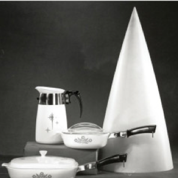
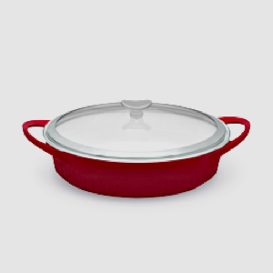

Corning Ware History
내열유리의 역사 코닝웨어 이야기
-
 1952
1952파이로세럼(Pyroceram®)개발
파이로 세럼의 장점 뭔지 설명
-
1956
미국 코닝사에서 파이로세럼을
이용해 미사일 노즈콘 제작강한 압력과 속고에도 견디는
파이로세럼 증명 -
1958
파이로세럼으로 만든 주방용품
Corningware® bakeware
탄생 -
1966
투명유리세라믹 개발 완료
-
1972
손잡이 부착 제품 풀시
-
1978
프렌치 화이트 (French
White®)출시미국 내 결혼 준비 필수 아이템으로
출시와 동시에 꾸준히 베스트 셀러로
판매중 -
2008
심플리라이트(SimplyLite™)
기존 bakeware 보다 50%
가벼운 무게 -
 2010
2010에치(etch®)출시
스톤웨어 라인으로 텍스쳐의 질감과
다양한 컬러의 모던한 디자인 제품 -
2012
베스트셀러 제품
프렌치 화이트 (French
White®)의 신제품 출시손잡이와 함께 현대적인 디자인으로
업그레이드 -
2014
CW by Corningware™ 출시
주방용품에도 개성을 중시하는
밀레니엄 세대를 겨냥한 화려한 색감
과 세련된 디자인의 제품 -
2015
프렌치 화이트 캐스트 알루미늄
(French White® Cast
Aluminum)출시오븐과 가스레인지 모두 사용 가능한
쿡웨어 제품 -
2015
리프레쉬 (Refresh) 출시
우주탄두 미사일에 사용되는
내열유리 성분으로 극도의 온도차에
도 끄떡없는 천연 무공해 글라스
세라믹 재질